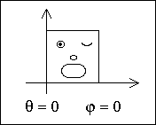
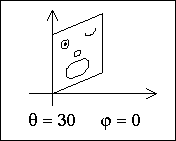
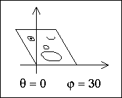
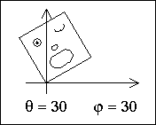

Rotations
The angle θ measures rotations of horizontal lines


The angle φ measures rotations of vertical lines

The condition θ = φ gives a rigid rotation about the origin. Positive angles are counterclockwise.

Return to
Geometry of Plane Transformations
.